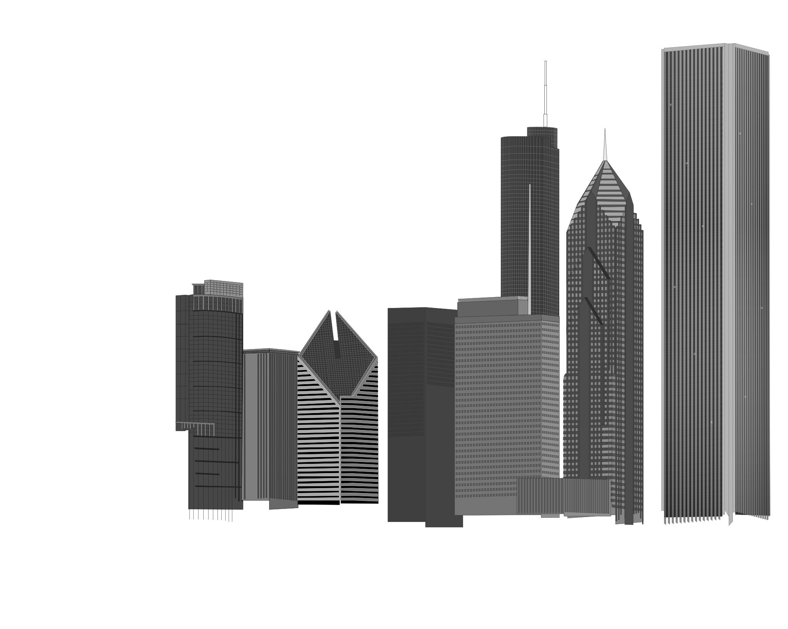

Original layout · proportions and spacing fitted to the drawing. Switch to geographic layout to inspect the ground plan.

Footprints, coordinates & height differences
Ground plan uses an orthographic camera: roofs do not grow with height. Both layouts align at Crain and keep the same camera and zoom when toggled in ground plan or height comparison. The drawing’s other positions are artistic. Only the geographic layout is mapped.
All values are meters. Ground extents are east–west × north–south bounding dimensions, including mapped podiums, rather than facade lengths. Coordinates are east and north of Crain (). Top heights include modeled spires and antennas; architectural heights exclude antennas.
| Building / footprint source | East, north | Original ground extent | Mapped ground extent | Original → geographic top (Δ) | Height source & assumptions |
|---|
Footprints and streets: © OpenStreetMap contributors · ODbL, local snapshot from September 17, 2026. Mapped outlines are not a survey. Street lines show location, not curb width; they are flattened to one ground plane, with lower streets omitted. Roofs are simplified and some podium heights are estimated. This lets you inspect spacing; exact street widths and Chicago’s multiple road levels need additional data.
The starting view follows the SVG’s angle, proportions, and spacing. Orbit around the Heritage’s curved bow and finned crown, Kemper’s ribs, Crain’s diamond roof, Michigan Plaza’s window grid, Trump’s stepped shaft and spire, One Prudential’s punch-card slab and antenna, Two Prudential’s projecting chevrons and spire, and Aon’s granite piers and roof screens. Depth, hidden sides, and lower floors obscured in the drawing are approximate.
Camera moves only when you interact or start the turntable.